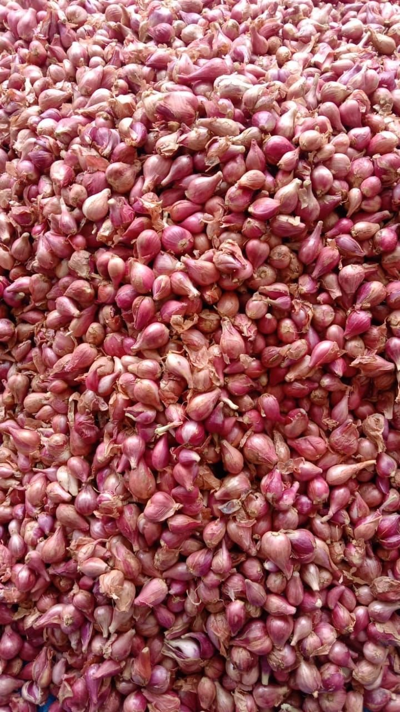
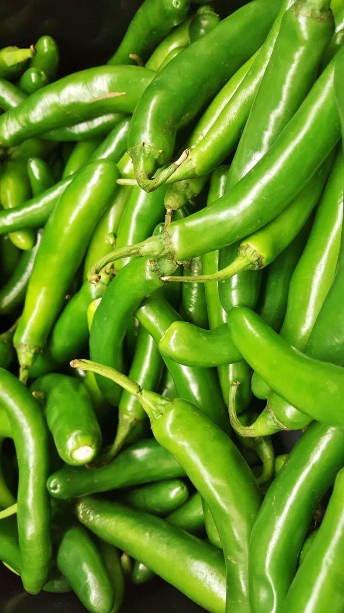
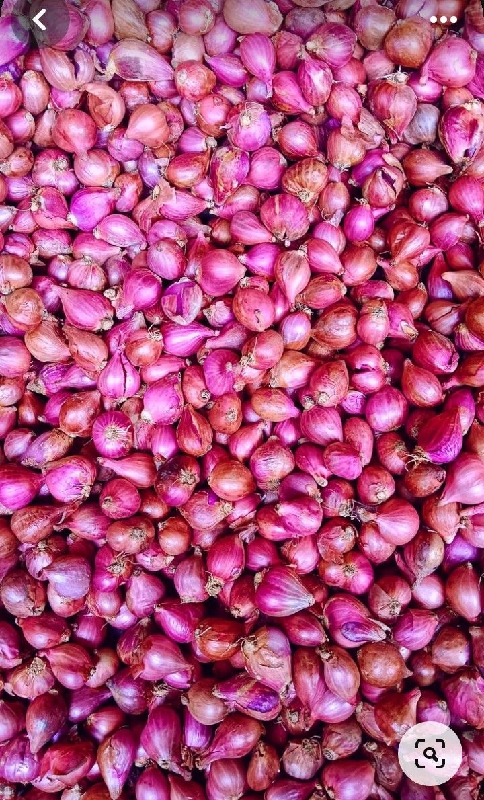
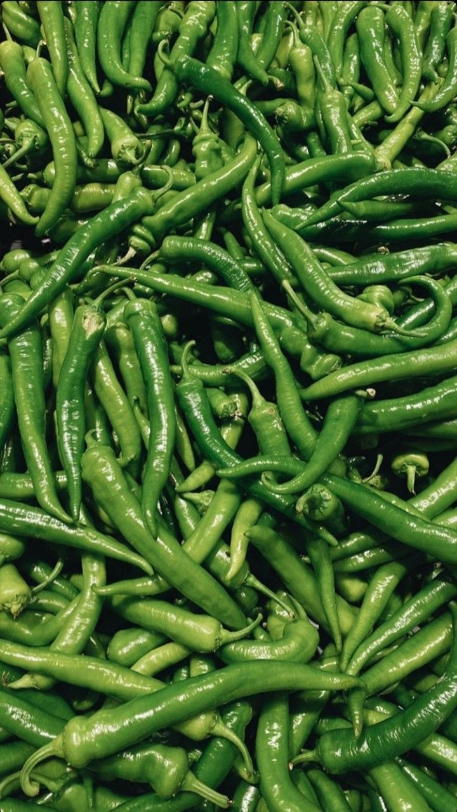

FOUR QC CHECKPOINTS
Checked at every hand-off.
4×
PER CONSIGNMENTSigned off before dispatch
 STAGE · FIELD
STAGE · FIELD
At the farm
Field officer confirms maturity, colour and pest status before harvest is called.
✓Maturity stage✓Pest & disease scan

STAGE · INTAKE
On arrival
Incoming produce weighed, sampled and logged against the farm and plot.
✓Weighbridge entry✓Farm & plot logged

STAGE · GRADING
At grading
Sorted to size and defect tolerances; QC supervisor signs off each graded lot.
✓Size & colour gauge✓Supervisor sign-off
 STAGE · DISPATCH
STAGE · DISPATCH
Before loading
Random-bag check, temperature reading and photos of the load shared with you.
✓Temperature reading✓Load photos to buyer
GRADE DEFINITIONS
One grading language across every vegetable.
Whatever you buy — onion, tomato or gourd — Grade A, B and C mean the same thing on every invoice.
 MOST SPECIFIED
A
MOST SPECIFIED
A
GRADE A
Premium / retail
Top size band, uniform colour and shape. Built for shelves where every piece is seen.
UNIFORMITYHighest
DEFECT TOLERANCEUnder 2%
SupermarketsQuick-commercePremium HoReCa

B
GRADE B
Trade / wholesale
Mid size band, sound and firm, minor surface marks allowed. Our highest-volume grade.
UNIFORMITYHigh
DEFECT TOLERANCEUnder 5%
Wholesale mandisDistributorsInstitutional kitchens

C
GRADE C
Processing
Mixed size or fully ripe — wholesome and fit for processing at value pricing.
UNIFORMITYMixed
DEFECT TOLERANCEFit for processing
Pickles & pastesPureesFood service
PACKAGING
Packed for the distance
Private labelling and custom bag weights are available for contract buyers.
Leno mesh bags10 / 25 / 50 kg · onion, chilli
Jute bags50 kg · cured small onion
Plastic crates15 / 20 / 25 kg · tomato, gourds, cauliflower
Ventilated cartons5 / 10 / 20 kg · chilli, jalapeño, gourds
COMPLIANCE
Registrations & documents
Every new buyer receives a complete onboarding pack — licences, tax registration and sample traceability records — before the first order.
TAX
GST registration
LOT
Traceability record
FSSAI
FSSAI food business licence
ONBOARDING
Pack
INCLUDED
FSSAI
LICENSED
FSSAI food business licence
LIC. NO. 0000000000000
GST
REGISTERED
GST registration
33XXXXX0000X0XX
LOT
EVERY INVOICE
Lot-wise traceability record
Farm cluster · harvest date · batch
LAB
ON REQUEST
Residue test reports
NABL-accredited laboratory
E-WAY
E-way bill & tax invoiceIssued with every consignment
Request onboarding pack